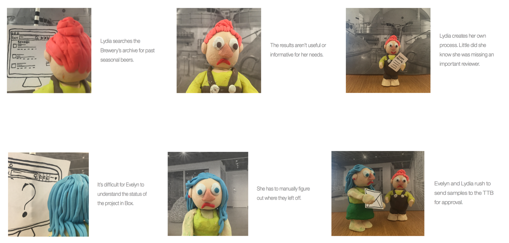

Role
UX | UI | Research DesignThe majority of this project was designed by myself and my partner in crime, Sam Mak. I participated in every aspect of the design process, from conducting research and developing personas, to user testing and creating wireframes. However, after our first design iteration, Box and IBM announced they were business partners so we shifted gears and started collaborating with 2 Box designers to further expand their current capabilities. Due to business needs, Sam and I were pulled off of this project after Iteration 2 and moved elsewhere.
The Solution
Provide a workflow software for multi-sized businessesOur final deliverables consisted of personas founded through research and mid-hi fi prototypes tested by focus users. We handed off these deliverables to the Box design team to continue iterating and finalize through more user testing and skin in Box’s visual language.


Process
We created these 3 personas through research from our sponsor users at Samuel Adams.
Evelyn The Business CoordinatorManages several teams, understands problems, values efficiency
Lydia The Business User: Works in the Field (Team Lead)Wants task adaptability, values efficiency
Carl The Business User: Works in Field (Knowledge Worker)Wants task adaptability, values efficiency
Sponsor users explain how they are currently using Box, more specifically adhoc-ing Box's capabilities to create a legal process workflow when creating a new beer brew.

Over all the as-is process was folder based. Documents had to be manually moved from one folder to the next. This caused users a lot of frustration during the workflow process. Below are the painpoints broken down.
StructureEvelyn, cannot provide enough structure and control of the formula process without engaging IT architects and developers to build a less than ideal solution that requires training to understand.
VisibilityCarl and Lydia have challenges finding their formulas and understanding what state they are in.
AdaptabilityLydia has no coherent way to cater for variations in participants or steps in the process.
Ideation
#1
Evelyn, a business coordinator is empowered to define a task flow for
multiple contributors without the help of an administrator.

#2
Evelyn and Lydia can find and understand the status of their documents
and business processes immediately.


#3
Lydia, a business user, is empowered to adapt the task flow to meet her
needs in real time.
Throughout the design process we ideated over and over again continuously making revisions that were higher levels of fidelity.